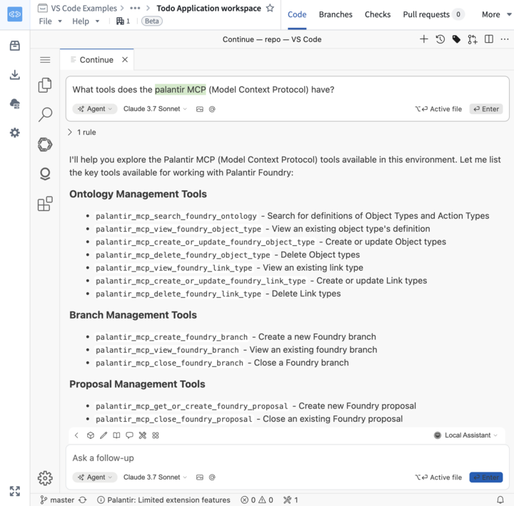

Use the following section below to explore useful tips and best practices to get started with Palantir MCP.
If you need coding assistance, the Palantir MCP can help by searching the Palantir documentation or getting context about your current repository.
In a TypeScript OSDK repository:
What ontology objects do I have in my OSDK?
In a Python transforms repository:
Can you rewrite this Python transform to use lightweight?
If you are working in a Python transforms repository, it is often necessary to understand the contents of a dataset. You can prompt the model to analyze datasets for you by providing a dataset RID.
Replace the @ shortcut).
Can you find an appropriate primary key in this dataset: <RID>?
If you are working on a TypeScript OSDK application, it is common to reference data that may not yet be in the ontology. Instead of breaking focus on your current task, you can ask the MCP to create notional data for you and continue working on your application.
I'm working on this OSDK application and need to reference some user data that I don't have in my OSDK yet.
Can you create a new notional user dataset, create a new User Ontology object, and then create a pull request for me?
The user dataset should have the columns:
user_id, name, email
To receive a full list of tools available in Palantir MCP that can be useful for your workflows, you can ask the following:
What tools does the Palantir MCP (Model Context Protocol) provide?
When should they be used?
